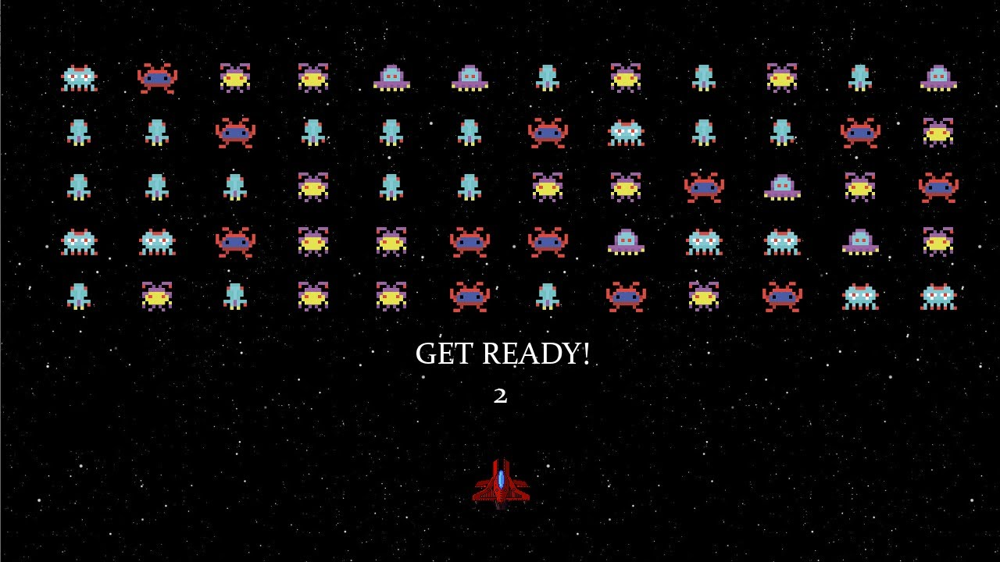

Em Space Invaders o jogador controla os movimentos da arma "Laser Base", um canhão laser que se movimento na parte inferior da tela. Da parte superior marcham em direção ao canhão aliens organizados em linhas. O objetivo do jogador é evitar que os aliens atinjam a parte inferior da tela, para essa tarefa o canhão possui munição infinita para atirar. Ao acertar e destruir um número grande aliens os restantes começam a marchar mais rapidamente em direção ao jogador. Quando o jogador elimina todos os aliens uma nova formação é montada agora iniciando uma linha abaixo da formação anterior. Ocasionalmente uma nave surge voando na parte superior da tela e dá ao jogador pontos extras quando atingida.
| Nome dos titulos lançados | Ano de lançamento | Estudio | Gênero | Editora |
| Space Invaders | 1978 | Midway | Shoot 'em up | Taito Corporation |
| Space Invaders Part II | 1979 | Midway | Shoot 'em up | Taito Corporation |
| Super Space Invaders ’91 | 1990 | Midway | Shoot 'em up | Taito Corporation |
| Space Invaders Extreme | 2018 | Midway | Shoot 'em up | Taito Corporation |